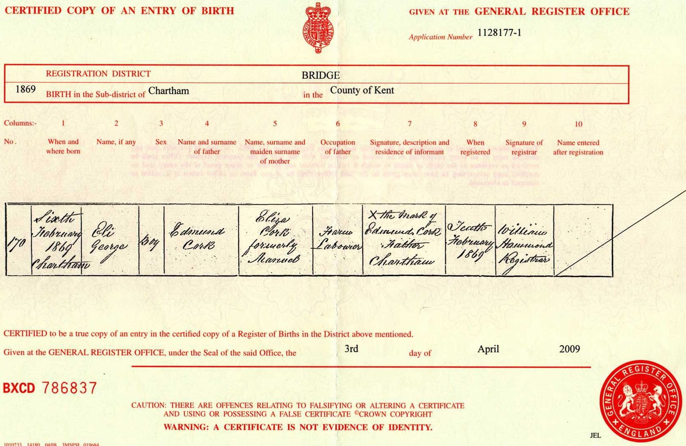
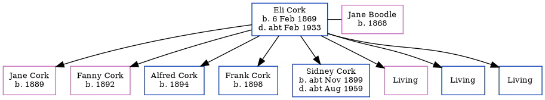

Eli George Cork 1869 - c1933
[ Home ] | [ Calendar ] | [ Surnames Index ] | [ Errors ] | [ Family History ]Eli Cork, the husband of Jane Boodle (the first cousin three-times-removed on the mother's side of Nigel Horne), was born in Chartham, Kent, England on 6 Feb 18691,2,3 and married Jane (with whom he had 8 children: Jane, Fanny, Alfred, Frank, Sidney, Lily, Horace and Leonard, along with 3 surviving children) in Bridge, Kent, England in 1890.
During his life, he was living at Plough Row, Harbledown, Kent on 5 Apr 18915, on 31 Mar 19011 and on 2 Apr 19114.
He died c. Feb 1933 in Canterbury, Kent, England3.
Children
- Jane was born in 1889
- Fanny was born in 1892
- Alfred was born in 1894
- Frank was born in 1898
- Sidney was born c. Nov 1899
Citations
- 1901 England, Wales & Scotland Census - Findmypast (was age 32 and the head of the household)
- England & Wales births 1837-2006 - Findmypast
- England & Wales deaths 1837-2007 - Findmypast
- 1911 Census for England & Wales - Findmypast (was age 42 and the head of the household)
- 1891 England, Wales & Scotland Census - Findmypast (was age 23 and the head of the household)
Media
Eli Cork Birth Certificate

1891 England, Wales & Scotland Census - GBC/1891/0005722678
England & Wales births 1837-2006 - BMD/B/1869/1/AZ/000134/048
England & Wales deaths 1837-2007 - BMD/D/1933/1/AZ/000250/014
England Births & Baptisms 1538-1975 - R_885422374
Family Tree
Map
Generated by ged2site. Last updated on Jul 3, 2024
Known Issues
Marriage date (1890) has no citations
No records of living with anyone